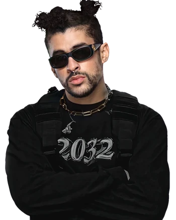

Introducción
Noriel, cuyo nombre real es Noel Santos Román, es un cantante y compositor puertorriqueño conocido por su trabajo en el género del reguetón y el trap latino. Nacido el 26 de junio de 1994 en Puerto Rico, Noriel ha ganado reconocimiento por sus letras y colaboraciones con otros artistas destacados del género. Noriel se identifica con el género urbano, específicamente con el trap y el reguetón; está considerado como una de las grandes promesas del género, sus canciones de trap lo llevaron a hacerse muy popular en Puerto Rico y en el resto del mundo.
Artistas Destacados con los que ha Colaborado
| Numero de canciones con Noriel | Nombre del Artista y canciones en las que han colaborado | Foto |
|---|---|---|
| 1 | Maluma: Cuatro Babys. | |
| 2 | Bad Bunny: Amigos y Enemigos, De las 2, Me mata, Ahora me llama, etc. |  |
| 3 | Arcángel: De las 2, Me mata, Diles. | |
| 4 | Farruko: Doble L, El Juego, etc. | |
| 5 | Bryant Myers: No somos Ná, Quieres enamorarme. |
Trayectoria
Noel Santos Román, conocido artísticamente como Noriel, es un cantante y compositor puertorriqueño nacido el 26 de junio de 1994. Es reconocido como uno de los pioneros del trap latino, género que mezcla el reguetón con elementos de hip hop y rap, y que ha ganado popularidad global desde mediados de los años 2010. Además de su impacto musical, Noriel ha utilizado su influencia para abordar temas sociales y apoyar a comunidades en Puerto Rico. Ha lanzado proyectos como Trap Capos II y sencillos como "No Te Hagas la Loca" y "Cuerpo en Venta". Ha sido reconocido por publicaciones como Billboard y ha recibido premios importantes, reflejando su éxito y legado en la música